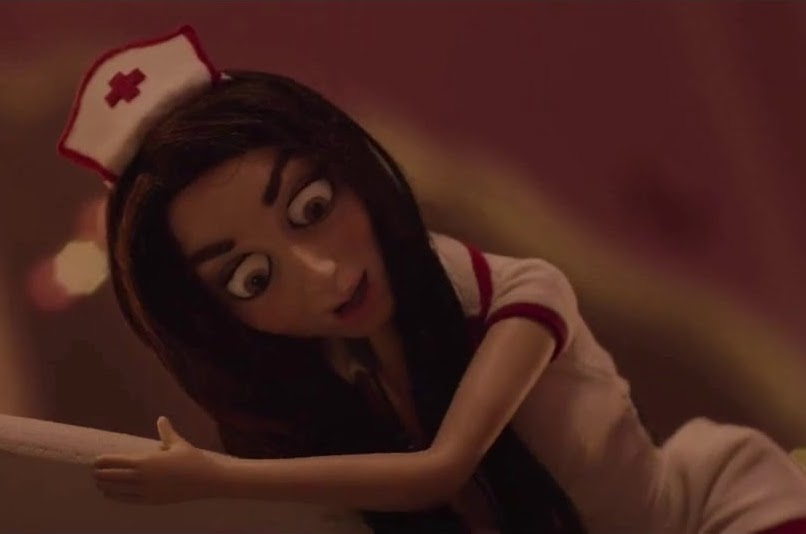

When Molly and Amy made their first stop at the boat party, they were greeted by a classmate of theirs who
practically forced some strawberries into their mouths. Several moments later, when Molly and Amy are at one
of their classmates’ murder mystery party, they learn that the strawberries they had earlier were laced with
drugs. In order to portray the extent to how drugged up Amy and Molly were, the filmmakers made the scene of
their drug realization in stop-motion animation with the characters portrayed as dolls.
The dolls in this scene are a twisted extension of the real Molly and Amy. They’re Molly and Amy for sure,
but Molly’s doll is dressed as a sexy orthodontist while Amy’s doll is dressed as a sexy farm girl. It is
important to note that in the film, Molly and Amy are both feminists, as we can infer from the bumper
stickers we saw on their car which read, “Still a Nasty Woman!”, “Warren 2020”, “Life Begins at Perception”,
and “Hot Flashes are Power Surges!”
So seeing them trapped in Barbie doll-like bodies is interesting because
their appearances are almost a complete contrast to their actual personalities. It’s very representative of
Molly and Amy’s experience that night because they’re doing things that they don’t normally do, things that
are in contrast to who they are and how they have spent their past 4 years: going to parties (not even just
one, but multiple, all in one night!), talking with their classmates who they typically do not talk to
outside of class, and
doing drugs (even if it was involuntarily). In the night during which this film takes place, we see Molly
and Amy in settings and situations that we would not normally see them in if this movie were filmed on a
different night of their lives, and the absurdity of their experiences are more clearly portrayed with this
doll scene.
Although the attire of these dolls is quite different from how we normally saw Molly and Amy in the film, we
still know that these dolls were in fact Molly and Amy because we heard Molly and Amy’s voices throughout
this entire scene and these dolls did have a slight resemblance to the human characters, particularly in the
hair color and style. The humans Molly and Amy were not physically present in this scene of the film, but
the dolls did an amusing and convincing job of serving as the bodies of Molly and Amy. The use of dolls was
not too
realistic and not too slapstick either. Having this balance of realism and fantasy in this scene allowed for
us to better understand how Molly and Amy felt in this scene: distraught, trapped, and if you were like Amy,
intrigued. In the reading of Digital Visual Effects in Cinema and the Seduction of Reality, we learned that
“in animation, it really takes a bit of exaggeration to make something look convincing” and that “caricature
provide[s] a surer route to the interior of the characters’ personalities.” In the doll physique of Molly
and Amy, their features are not made to look super realistic, as we can see from their large eyes and
breasts, tiny waist, and long legs. But through their eyes in particular, we’re able to see more intensity
in their emotions, and a hilarious look
of surprise when Molly and Amy both realize they are trapped in the bodies of dolls. For Molly in
particular,
the expression of her large eyes is something we see from her throughout the film, and this expression of
hers is not only maintained, but enhanced, in the doll version of her.

If it weren’t for the exaggeration in the features of these dolls, or simply the use of these dolls in the
first place, we would not have been able to feel as immersed into the drug trip they had. We wouldn’t have
been able to practically experience the hallucination with them, grasp the intensity of the drug’s effect on
them, and just as importantly, laugh at Molly and Amy’s visions and reactions in the moment.
This doll scene was created by the ShadowMachine animation studio, which is the studio responsible for Tuca & Bertie and Bojack Horseman. The team consisted of 30 people working over the course of about five months, with about two and a half months dedicated to the design and storyboard processes and another two months dedicated to production. This scene was actually filmed separately from the original filming location because filming on location would have taken too long, so ShadowMachine built their own set of the life-size girl’s bedroom. The process for creating the 12-inch dolls consisted of going from drawings based on the actresses, to clay maquettes, and then hard molds filled with silicone. In the end, the doll scene consisted of three different silicone bodies and four different heads, each made to represent the clothed, unclothed, calm or panicked instances of the characters in the scene. (Source: Vulture)